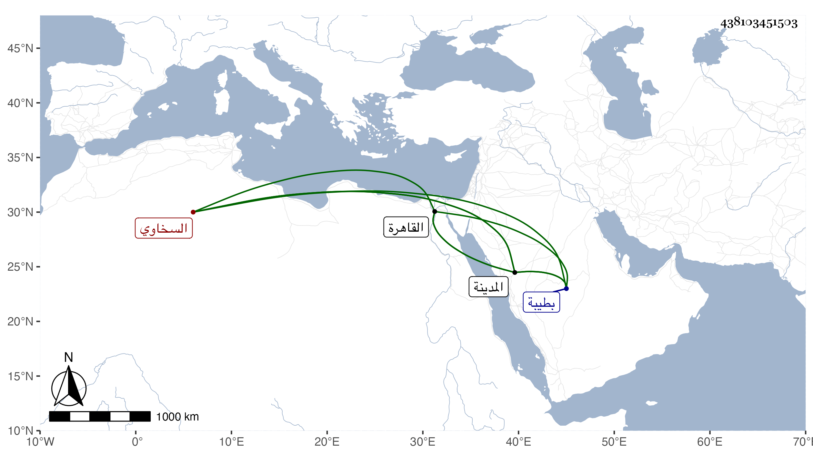

0902Sakhawi.DawLamic.ITO20230111-ara1.EIS1600.438103451503
Biography ID: 438103451503
272
أحمد بن محمد بن أحمد بن موسى بن أبي بكر الشهاب ابن قاضي المالكية بطيبة الشمس السخاوي بن القصبي أخو خير الدين محمد الآتي وأبوهما . ممن سمع مني بالقاهرة والمدينة وكذا سمع على صهره الجلال القمصي وكان أبوه زوجه بابنته ثم فارقها وقطن مع أبيه بالمدينة وهو مصاب بإحدى عينيه .
